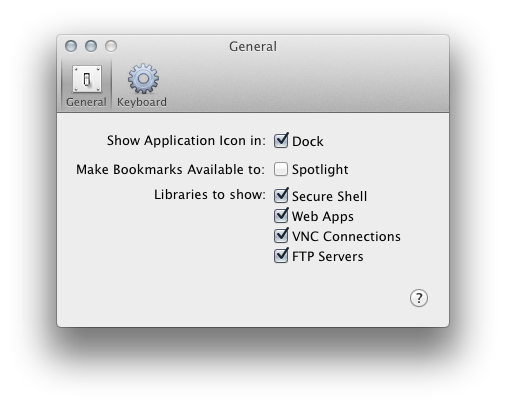

Throughout the development of Go2, I have tried to maintain a balance between features and cleanliness. I avoided needing preferences at all, but with Go2 1.3 I believe there are enough modifications to the user interface that someone might want to change how things are displayed. So, a proper preferences window was necessary.
To open the preferences window, press the hotkey “⌘,” or select "Go2", and "Preferences..." It should look something like this:

Here you can select which of the default libraries to show, if your bookmarks should be available to Spotlight or not, and if you would like for Go2 to run only in the status bar or if you would like it in the Dock as well.
If you choose not to have Go2 run in the Dock, the menu options are available in a new button that appears in the bottom left hand corner of the main Go2 window, or as a right click (or control click ) menu from the status bar icon.
The second tab in the preferences sets the system wide shortcut for Go2's status bar quick search.
A Note On Spotlight
In version 1.2, Go2 could write anywhere on the filesystem that you had access to. Go2 took advantage of this by using your Public folder as a data folder for it's bookmarks, making them available to Spotlight. In version 1.3, Go2 runs in a high security container called a sandbox, so it can no longer write files to your Public folder. So, it writes the files to a folder here:
~/Library/containers/com.farmdog.go2/data/Desktop/go2data
I'm still working on getting Spotlight to reliably index this folder, but if you would like to use another launcher like Quicksilver or Launchbar, simply have them index this folder and they will work as expected.